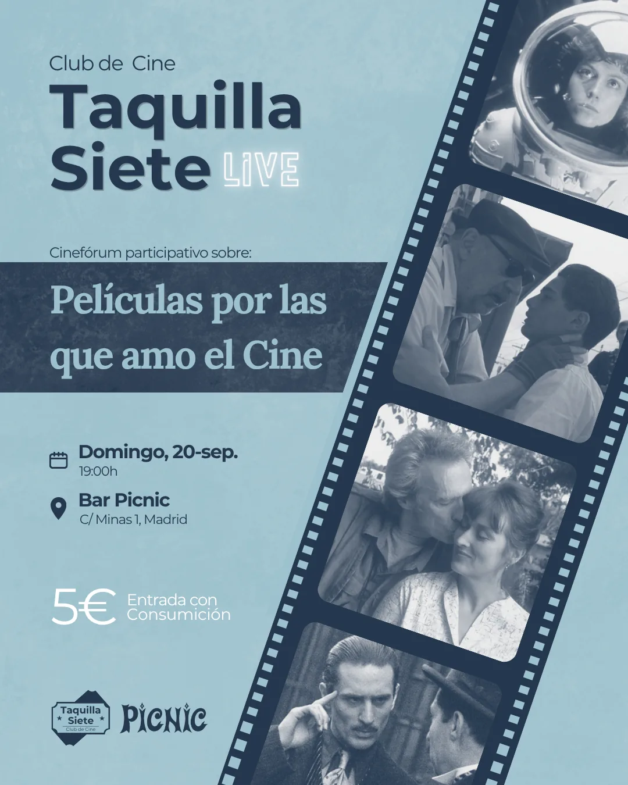

En directo · Sala Picnic, Madrid

Todos tenemos películas que no se nos olvidan: la que nos hizo querer el cine, la que llegó en el momento justo, la que defendemos contra viento y marea. Taquilla Siete Live va de eso — y de atreverse a subir a un escenario a contarlo.
Nos juntamos en la Sala Picnic, en Madrid, y el micrófono es de quien lo quiera: no hace falta ser experto ni traer nada preparado. Subes, nos hablas de tu película, la comentamos juntos entre risas y confesiones, y el escenario queda listo para la siguiente historia.
Y si prefieres quedarte en la butaca, también vale: escuchar a alguien defender la película de su vida es la otra mitad del plan. Las próximas fechas las anunciamos en Instagram y en el calendario del club.
← Volver a actividadesNadie viene con guion: la noche la construye el público.
Propón: escanea el QR de la sala y dinos una película relacionada con la temática de la noche.
Cruza los dedos: entre todas las propuestas, vamos sacando algunas al azar.
Sube al escenario: si sale la tuya, nos cuentas tu película y tu experiencia con ella.
Domingo 20 de septiembre, 19:00h — Bar Picnic (C/ Minas 1, Madrid). Entrada: 5€ con consumición.
